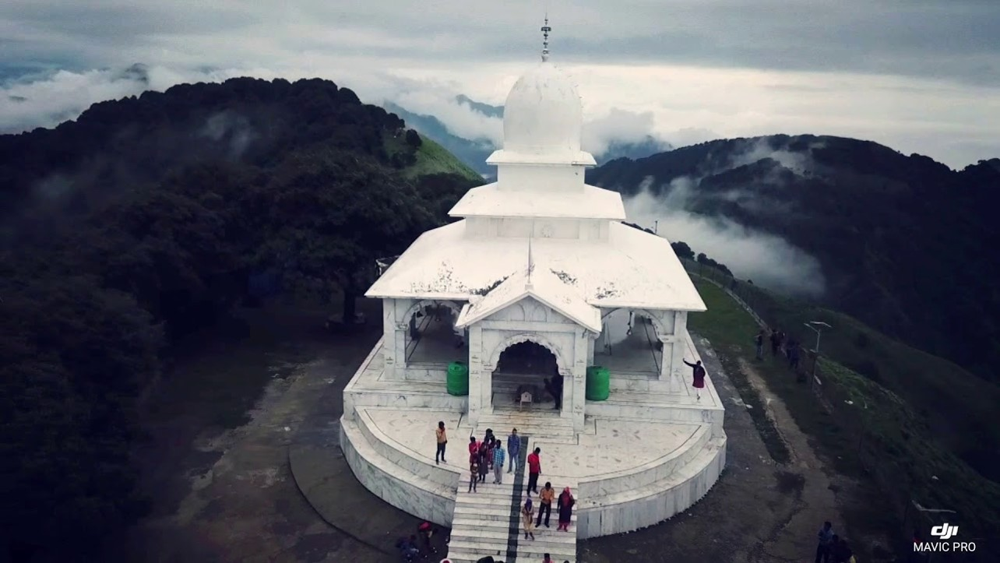

ABOUT
The “Utthan" project is about the application of knowledge in the local community derived in process of Manthan at a University i.e. Universe of knowledge. It explores the opportunities in harnessing the scarce resources up to optimum level.The communities in the vicinity of our campus have immense scenic beauty as well as rich culture to offer to the world. Raising the bar of development at the community level and to lit self-confidence at the individual level is the key aim of the project. The resemblance of challenges of hilly terrain in Uttarakhand in Gram Panchayat Tehsil Vikasnagar.
